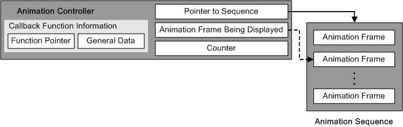

The Animation Controller controls the playback of cell and multicell animations.
The pointer to the animation sequence data currently being played is stored in the animation frame currently being displayed. The Controller stores the information defining the animation in the animation sequence. The animation sequence data exists within the animation data (.nanr and .nmar files) that is read into the main memory. The animation data is static and cannot be rewritten.
The pointer that points to the frame data for the currently playing animation is stored in the counter. Animation frame data refers to information such as the data number of the cell or multicell displayed in that time period.
The playback speed is the information needed to change the animation playback speed. The animation playback speed can be set. Setting a negative value allows reverse playback. (There is a method for setting a reverse playback flag.)
The animation controller supports the calling of callback functions using the different timing settings of animation playback. Therefore, the animation controller maintains the 4 bytes of user data passed to the callback function and the callback function pointer as a data member.
None.
2004/12/06 Initial version.
CONFIDENTIAL